정보처리기사(구) (2008-09-07 기출문제)
1과목: 데이터 베이스
1. 다음 SQL 명령 중 DML에 해당하는 것으로만 나열된 것은?
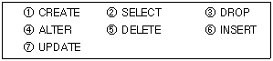
- ②,④,⑤,⑥,⑦
- ②,⑤,⑥,⑦
- ①,②,⑥
- ②,④
(정답률: 75%)

2. 분산 데이터베이스의 장점으로 거리가 먼 것은?
- 데이터베이스 관련 소프트웨어 개발비용 감소
- 신뢰성(Reliability)와 가용성(Avability) 향상
- 질의처리(Query processing) 향상
- 데이터의 공유성 향상
(정답률: 76%)
3. 데이터 제어어(DCL)의 기능으로 옳지 않은 것은?
- 데이터 보안
- 논리적, 물리적 데이터 구조 정의
- 무결성 유지
- 병행수행 제어
(정답률: 65%)
4. 시스템카탈로그에 대한 설명으로 옳지 않은 것은?
- 데이터베이스에 포함된 다양한 데이터 객체에 대한정보들을 유지, 관리하기 위한 시스템 데이터베이스이다.
- 시스템카탈로그를 데이터사전(Date Dictionary)이라고도 한다.
- 시스템카탈로그에 저장된 정보를 메타 데이터라고도 한다.
- 시스템카탈로그는 시스템을 위한 정보를 포함하는 시스템 데이터베이스이므로 일반 사용자는 내용을 검색할 수 없다.
(정답률: 77%)
5. 데이터베이스의 설계 과정을 올바르게 나열한 것은?
- 요구조건 분석→개념적 설계→물리적 설계→논리적 설계
- 요구조건 분석→개념적 설계→논리적 설계→물리적 설계
- 요구조건 분석→논리적 설계→개념적 설계→물리적 설계
- 요구조건 분석→물리적 설계→개념적 설계→논리적 설계
(정답률: 80%)
6. Which of the following is not a property of the transaction to ensure integrity of the data?
- isolation
- autonomy
- durability
- consistency
(정답률: 55%)
7. 다음 트리를 Preorder 운행법으로 운영한 결과는?
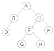
- DBGHEFCA
- ABDCEGHF
- DBAGEHCF
- ABCDEFGH
(정답률: 68%)
8. 다음 그림에서 트리의 차수는?
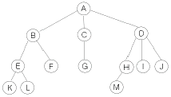
- 1
- 2
- 3
- 4
(정답률: 72%)
9. 색인 순차 파일(Indexed Sequential File)에 대한 설명으로 옳지 않은 것은?
- 색인 영역은 트랙 색인 영역, 실린더 색인 영역, 오버플로우 색인 영역으로 구분할 수 있다.
- 랜덤(random) 및 순차(sequence)처리가 모두 가능하다.
- 레코드의 삽입과 삭제가 용이하다.
- 색인 및 오버플로우를 위한 공간이 필요하다.
(정답률: 50%)
10. 데이터베이스를 설계할 때 물리적 설계 옵션 선택시 고려 사항으로 거리가 먼 것은?
- 트랜잭션 모델링
- 응답시간
- 저장 공간의 효율화
- 트랜잭션 처리율
(정답률: 65%)
11. 개체-관계모델에 대한 설명을 옳지 않은 것은?
- 오너-멤버(Owner-Member) 관계라고도 한다.
- 개체 타입과 이들 간의 관계 타입을 기본요소로 이용하여 현실 세계를 개념적으로 표현한다.
- E-R 다이어그램에서 개체 타입은 사각형으로 나타낸다.
- E-R 다이어그램에서 속성은 타원으로 나타낸다.
(정답률: 64%)
12. 다음 중 릴레이션의 특징으로 옳은 내용을 모두 나열한 것은?
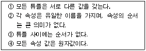
- ①,②,③,④
- ①,②,③
- ②,④
- ①,③,④
(정답률: 74%)
13. 정규화 과정 중 1NF에서 2NF가 되기 위한 조건은?
- 1NF를 만족하고 모든 도메인이 원자 값이어야 한다.
- 1NF를 만족하고 키가 아닌 모든 애트리뷰트들이 기본키에 이행적으로 함수 종속되지 않아야 한다.
- 1NF를 만족하고 다치 종속이 제거되어야 한다.
- 1NF를 만족하고 키가 아닌 모든 속성이 기본키에 완전함수적 종속되어야 한다.
(정답률: 49%)
14. 병형제어의 로킹(Locking) 단위에 대한 설명으로 옳지 않은 것은?
- 로킹의 대상이 되는 객체의 크기를 로킹 단위라고 한다.
- 로킹 단위가 작아지면 병행성 수준이 낮아진다.
- 데이터베이스도 로킹 단위가 될 수 있다.
- 로킹 단위가 커지면 로크 수가 작아 로킹 오버헤드가감소한다.
(정답률: 68%)
15. 다음 자료를 삽입(Insertion) 정렬을 이용하여 오름차순으로 정렬하고자 한다. 3회전 후의 결과로 옳은 것은?
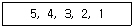
- 3, 4, 5, 2, 1
- 4, 5, 3, 2, 1
- 2, 3, 4, 5, 1
- 1, 2, 3, 4, 5
(정답률: 55%)
16. 뷰(view)에 대한 설명 중 옳은 내용으로만 나열된 것은?
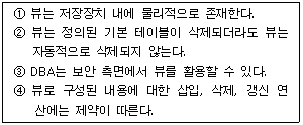
- ①, ②, ③, ④
- ①, ③, ④
- ②, ④
- ③, ④
(정답률: 68%)
17. Which of the following is a linear list in that elements are accessed created and deleted in a last-in-first-out order?
- Queue
- Graph
- Stack
- Tree
(정답률: 71%)
18. 데이터베이스에서 하나의 논리적 기능을 수행하기 위한 작업의 단위 또는 한꺼번에 모두 수행되어야 할 일련의 연산들을 의미하는 것은?
- 트랜젝션
- 뷰
- 튜플
- 카디널리티
(정답률: 77%)
19. 관계해석에 대한 설명으로 옳지 않은 것은?
- 수학의 프레디킷 해석에 기반을 두고 있다.
- 관계 데이터 모델의 제안자인 코드(Codd)가 관계데이터베이스에 적용할 수 있도록 설계하여 제안하였다.
- 튜플 관계해석과 도메인 관계해석이 있다.
- 원하는 정보와 그 정보를 어떻게 유도하는가를 기술하는 절차적 특성을 가진다.
(정답률: 61%)
20. 다음 영어 설명 중 데이터베이스의 정의로 옳은 내 용을 모두 나열한 것은?
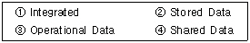
- ①, ②, ④
- ②, ③
- ①, ③
- ①, ②, ③, ④
(정답률: 64%)
2과목: 전자 계산기 구조
21. 어떤 디스크 팩이 6장으로 되어 있고 1면에는 200개의 트랙을 사용할 수 있다. 이 디스크 팩에서 사용 가능한 Cylinder는 몇 개인가?
- 200
- 400
- 1200
- 2400
(정답률: 42%)
22. 마이크로 오퍼레이션은 어디에 기준을 두고 실행되는가?
- flag
- 펄스
- 메모리
- RAM
(정답률: 41%)
23. 인스트럭션의 설계 과정에서 고려해야 할 사항이 아닌 것은?
- interrupt 종류
- 연산자의 수와 종류
- 데이터 구조
- 주소지정 방식
(정답률: 50%)
24. 상대주소지정방식을 사용하는 JUMP 명령어가 750번지에 저장되어 있다. 오퍼랜드 A=56일 때와 A=-61일 때 몇 번지로 JUMP 하는가?
- 806, 689
- 56, 745
- 807, 690
- 56, 689
(정답률: 51%)
25. 다음 메모리 구조에 대한 설명 중 가장 옳은 것은?
- 캐시는 가장 많이 쓰이고 있는 프로그램과 데이터를 저장하지만 보조기억장치(가상메모리)는 CPU에 의하여 현재 쓰이지 않는 부분을 저장한다.
- 캐시는 가장 많이 쓰이고 있는 프로그램과 데이터를저장하고 보조기억장치(가상메모리)도 CPU에 의하여 현재 가장 많이 쓰이고 있는 부분을 저장한다.
- 보조기억장치(가상메모리)는 가장 많이 쓰이고 있는 프로그램과 데이터를 저장하지만 캐시는 CPU에 의하여 현재 쓰이지 않는 부분을 저장한다.
- 보조기억장치(가상메모리)와 캐시 모두 CPU에 의하여 현재 쓰이지 않는 부분을 저장한다.
(정답률: 53%)
26. RS 플립플롭에서 출력이 이전 입력에 의한 출력 값을 그대로 유지하는 경우는?
- R=0, S=0
- R=0, S=1
- R=1, S=0
- R=1, S=1
(정답률: 58%)
27. 그림의 Decoder에 있어서 Y0, Y1 에 각각 0, 1 이 입력되었을 때 1을 출력하는 것은 다음 중 어느 쪽 단자인가?
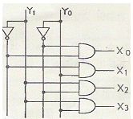
- X0
- X1
- X2
- X3
(정답률: 59%)
28. 인스트럭션 수행시간이 20ns이고, 인스트럭션 패치시간이 5ns, 인스트럭션 준비시간이 3ns이라면 인스트럭션의 성능은 얼마인가?
- 0.4
- 0.6
- 2.5
- 4.0
(정답률: 58%)
29. 불 함수
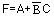
를 최소항의 곱으로 바르게 표시한 것은?- F(A, B, C) = ∑(1, 4, 5, 6, 7)
- F(A, B, C) = ∑(1, 2, 3, 6, 7)
- F(A, B, C) = ∑(1, 3, 5, 6, 7)
- F(A, B, C) = ∑(1, 2, 4, 6, 7)
(정답률: 44%)
30. 연산 명령 자체로 특수한 곱셈과 나눗셈을 수행하거나 혹은 곱셈과 나눗셈에 보조적으로 이용되는 것은?
- 산술적 Shift
- 논리적 Shift
- ADD
- rotate
(정답률: 63%)
31. Interrupt cycle에 대한 micro-operation 중 관계가 없는 것은?
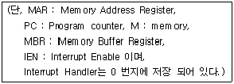
- MAR ← PC, PC ← PC + 1
- MBR ← MAR, PC ← 0
- M ← MBR, IEN ← 0
- GO TO fetch cycle
(정답률: 36%)
32. 수 -13.625를 부동소수점으로 표현할 때 지수부에 해당 하는 값은? (단, 바이어스는 128이고, 소수점 아래의 1번째 비트는 저장하지 않는 것으로 가정한다.)
- 0000 0100
- 1000 0000
- 1000 0100
- 0110 1101
(정답률: 43%)
33. 3 다음과 같은 스택(stack) 구조에서 SP(stack pointer)와 레지스터 A가 pop A를 수행한 후 SP와 A 레지스터의 내용은?
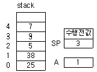
- 2, 9
- 4, 7
- 3, 9
- 2, 5
(정답률: 38%)
34. 다음 마이크로연산이 ]나타내는 동작은?
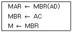
- Branch AC
- Store to AC
- Add AC
- Load to AC
(정답률: 47%)
35. 다음 중 분리 캐시(split cache)를 사용하는 주요 이유는?
- 캐시 크기의 확장
- 캐시 적중률 향상
- 캐시 액세스 충돌 제거
- 데이터 일관성 유지
(정답률: 55%)
36. 명령 사이클의 명령어 인출 과정에서 DMA(Direct Memory Access) 요청이 있었다면 CPU는 어느 지점에서 요청 사실을 아는가?
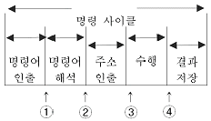
- ①
- ②
- ③
- ④
(정답률: 47%)
37. 다음 인터럽트를 요청한 장치식별에 대한 설명으로 옳은 것은?
- 단일 인터럽트 요청신호 회선체계의 경우 고유 인터럽트 요청신호 회선체계와 달리 장치 식별이 필요하지 않다.
- 폴링방식은 인터럽트를 요청한 장치가 자신의 장치번호를 장치번호버스(Device Code Bus)를 통해 CPU에 알리는 방식이다.
- 벡터인터럽트 방식은 소프트웨어에 의한 장치식별 방식이다.
- 벡터 인터럽트 방식은 장치 식별을 위한 별도의 프로그램 루틴이 없어 속도 면에서 폴링 방식에 비해 빠르다.
(정답률: 47%)
38. DMA 제어기에서 CPU와 I/O 장치 사이의 통신을 위해 필요한 것이 아닌 것은?
- address register
- word count register
- address line
- device register
(정답률: 44%)
39. 다음과 같은 값을 가지는 시스템에서 2계층 캐시 메모리를 사용할 경우는 그렇지 않은 경우에 비해 평균 메모리 엑세스 시간이 약 몇 배 향상되는가?
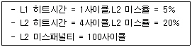
- 0.7
- 1.4
- 2.7
- 5.5
(정답률: 44%)
40. 동기가변식 마이크로 오퍼레이션 사이클 타임을 정의하는 방식은 수행시간이 유사한 마이크로 오퍼레이션들끼리 모아 집합을 이루고 각 집합에 대해서 서로 다른 마이크로 오퍼레이션 사이클 타임을 정한다. 이 때 각 집합간의 마이크로 사이클 타임을 정수배가 되도록 하는 이유는?
- 각 집합 간 서로 다른 사이클 타임의 동기를 맞추기 위하여
- 각 집합간의 사이클 타임을 동기식과 비동기식으로 하기 위하여
- 각 집합간의 사이클 타임을 모두 다르게 정의 하기 위하여
- 사이클 타임을 비동기식으로 변환하기 위하여
(정답률: 69%)
3과목: 운영체제
41. 프로세스(process)에 대한 설명으로 옳지 않은 것은?
- 트랩 오류, 프로그램 요구, 입.출력 인터럽트에 대해 조치를 취한다.
- 비동기적 행위를 일으키는 주체로 정의할 수 있다.
- 실행중인 프로그램을 말한다.
- 프로세스는 각종 자원을 요구한다.
(정답률: 51%)
42. 분산 운영체제의 목적으로 거리가 먼 것은?
- 자원 공유
- 연산속도 향상
- 통신기능 증대
- 보안성 향상
(정답률: 72%)
43. 운영체제를 자원 관리자(Resource Manager)라는 관점으로 보았을 때, 자원들을 관리하는 과정을 순서대로 옳게 나열한 것은?
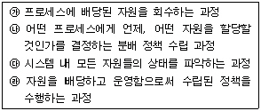
- 가 → 나 → 다 → 라
- 다 → 라 → 나 → 가
- 가 → 다 → 나 → 라
- 다 → 나 → 라 → 가
(정답률: 65%)
44. 페이징 기법에서 페이지 크기가 작아질수록 발생하는 현상으로 거리가 먼 것은?
- 기억장소 이용 효율이 증가한다.
- 입/출력 시간이 늘어난다.
- 내부 단편화가 감소한다.
- 페이지 맵 테이블의 크기가 감소한다.
(정답률: 50%)
45. 주기억장치 관리기법인 최초, 최적, 최악 적합기법을 각각 사용할 때, 각 방법에 대하여 5K의 프로그램이 할당되는 영역을 각 기법의 순서대로 옳게 나열한 것은? (단, 영역 1, 2, 3, 4 는 모두 비어 있다고 가정한다.)
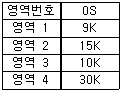
- 영역1, 영역3, 영역4
- 영역2, 영역1, 영역3
- 영역1, 영역2, 영역3
- 영역1, 영역1, 영역4
(정답률: 70%)
46. 유닉스에서 I-node 의 내용이 아닌 것은?
- 파일 소유자의 사용자 식별(UID)
- 파일에 대한 링크 수
- 파일이 최초로 수정된 시간
- 파일의 크기
(정답률: 68%)
47. 현재 헤드 위치가 53에 있고 트랙 0번 방향으로 이동 중이다. 요청 대기 큐에는 다음과 같은 순서의 액세스 요청이 대기 중일 때 SSTF 스케줄링 알고리즘을 사용한다면 헤드의 총 이동거리는 얼마인가?
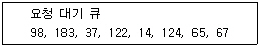
- 202
- 236
- 256
- 320
(정답률: 48%)
48. 운영체제의 목적으로 거리가 먼 것은?
- 사용 가능도 축소
- 응답시간 단축
- 처리 능력 향상
- 신뢰도 향상
(정답률: 75%)
49. 워킹 셋(Working Set)에 대한 설명으로 옳지 않은 것은?
- 프로세스가 실행하는 과정에서 시간이 지남에 따라 자주 참조하는 페이지들의 집합이 변화하기 때문에 워킹 셋은 시간에 따라 바뀌게 된다.
- 프로그램의 구역성(Locality) 특징을 이용한다.
- 워킹 셋에 속한 페이지를 참조하면 프로세스의 기억장치 사용은 안정상태가 된다.
- 페이지 이동에 소요되는 시간과 프로세스 수행에 소요되는 시간의 차이를 의미한다.
(정답률: 57%)
50. 다음과 같은 3개의 작업에 대하여 FCFS 알고리즘을 사용 할 때, 임의의 작업 순서로 얻을 수 있는 최대 평균 반환 시간을 T, 최소 평균 반환 시간을 t 라고 가정했을 경우 T-t의 값은?
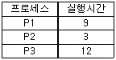
- 3
- 4
- 5
- 6
(정답률: 44%)
51. 파일 시스템에 관한 설명 중 옳지 않은 것은?
- 파일(File)은 연관된 데이터들의 집합이다.
- 파일은 각각의 고유한 이름을 갖고 있다.
- 파일은 주로 주기억장치에 저장하여 사용한다.
- 사용자는 파일을 생성하고 수정하며 제거할 수 있다.
(정답률: 66%)
52. UNIX에서 프로세스를 생성하는 시스템 호출문은?
- getpid
- fork
- pipe
- signal
(정답률: 67%)
53. 디렉토리의 구조 중 중앙에 마스터 파일디렉토리가 있고 하부에 사용자 파일 디렉토리가 있는 구조는?
- 단일 디렉토리 구조
- 2단계 디렉토리 구조
- 트리 디렉토리 구조
- 비순환 그래프 디렉토리 구조
(정답률: 61%)
54. 시분할 시스템(Time Sharing System)에 대한 설명으로 옳지 않은 것은?
- 대화식 처리가 가능하다.
- 시분할 시스템에 사용되는 처리기를 Time Slice라고 한다.
- 실제로 많은 사용자들이 하나의 컴퓨터를 공유하고 있지만 마치 자신만이 컴퓨터 시스템을 독점하여 사용하고 있는 것처럼 느끼게 된다.
- H/W를 보다 능률적으로 사용할 수 있는 시스템이다.
(정답률: 41%)
55. 교착 상태(Deadlock)의 회복기법에 대한 설명으로 옳지 않은 것은?
- 교착상태에 있는 모든 프로세스를 중지시킨다.
- 교착상태가 없어질 때까지 교착상태에 포함된 자원을 하나씩 비선점 시킨다.
- 교착상태가 없어질 때까지 교착상태에 포함된 프로세스를 하나씩 종료시킨다.
- 교착상태 회복 기법은 시스템 내에 존재하는 교착상태를 제거하기 위하여 사용된다.
(정답률: 42%)
56. 페이징 기법과 세그먼테이션 기법에 대한 설명으로 옳지 않은 것은?
- 페이징 기법에서는 주소변환을 위한 페이지 맵 테이블이 필요하다.
- 프로그램을 일정한 크기로 나눈 단위를 페이지라고한다.
- 세그먼테이션 기법에서는 하나의 작업을 크기가 각각 다른 여러 논리적인 단위로 나누어 사용한다.
- 세그먼테이션 기법에서는 내부 단편화가, 페이징 기법에서는 외부 단편화가 발생할 수 있다.
(정답률: 62%)
57. 다중 처리기 운영체제 형태 중 주/종(Master/Slave) 처리기에 대한 설명으로 옳지 않은 것은?
- 주 프로세서가 운영체제를 수행한다.
- 주 프로세서와 프로세서가 모두 입/출력을 수행하기 때문에 대칭 구조를 갖는다.
- 주 프로세서가 고장이 나면 시스템 전체가 다운된다.
- 하나의 프로세서로 지정하는 구조이다.
(정답률: 65%)
58. 운영체제에 대한 설명으로 옳지 않은 것은?
- 운영체제는 다수의 사용자가 컴퓨터 시스템의 제한된 자원을 사용할 때 생기는 분쟁들을 해결한다.
- 운영체제는 사용자와 컴퓨터 시스템 사이에 위치하여 컴퓨터 시스템이 제공하는 모든 하드웨어와 소프트웨어의 기능을 모두 사용할 수 있도록 제어 (Control)해 주는 가장 기본적인 하드웨어이다.
- 운영체제는 컴퓨터의 성능을 극대화하여 컴퓨터 시스템을 효율적으로 사용할 수 있도록 한다.
- 운영체제는 처리기(Processor), 기억장치, 주변장치 등 컴퓨터 시스템의 하드웨어 자원들을 제어한다.
(정답률: 56%)
59. UNIX의 커널(Kernel)에 대한 설명으로 옳지 않은 것은?
- 컴퓨터 시스템을 관리하는 UNIX 시스템의 핵심 부분이다.
- 주기억장치에 적재되어 상주하면서 실행된다.
- 명령어 해석기 역할을 한다.
- 프로세스, 기억장치. 입/출력장치 등을 관리한다.
(정답률: 67%)
60. 선점 스케줄링과 비선점 스케줄링에 대한 비교 설명 중 옳은 것은?
- 선점 스케줄링은 이미 할당된 CPU를 다른 프로세스가 강제로 빼앗아 사용할 수 없다.
- 선점 스케줄링은 상대적으로 과부하가 적다.
- 비선점 스케줄링은 시분할 시스템에 유용하다.
- 비선점 스케줄링은 응답시간의 예측이 용이하다.
(정답률: 42%)
4과목: 소프트웨어 공학
61. 다음 사항과 관계되는 결합도는 무엇인가?
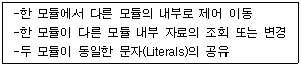
- Data Coupling
- Content Coupling
- Control Coupling
- Stamp Coupling
(정답률: 48%)
62. CASE 도구의 정보저장소(Repository)에 대한 설명으로 거리가 먼 것은?
- 일반적으로 정보저장소는 도구들과 생명 주기 활동, 사용자들, 응용 소프트웨어들 사이의 통신과 소프트웨어 시스템 정보의 공유를 향상시킨다.
- 초기의 소프트웨어 개발 환경에서는 사람이 정보 저장소 역할을 했지만 오늘날에는 응용프로그램이 정보 저장소 역할을 담당한다.
- 정보 저장소는 도구들의 통합, 소프트웨어 시스템의 표준화, 소프트웨어 시스템 정보의 공유, 시스템웨어 재사용성의 기본이 된다.
- 소프트웨어 시스템 구성 요소들과 시스템 정보가 정보 저장소에 의해 관리되므로 소프트웨어 시스템의 유지보수가 용이해진다.
(정답률: 58%)
63. 효율적 모듈 설계를 위한 유의사항으로 옳지 않은 것은?
- 모듈의 기능을 예측할 수 있도록 정의한다.
- 모듈은 단일 입구와 단일 출구를 갖도록 설계한다.
- 결합도는 강하게, 응집도는 약하게 설계하여 모듈의 독립성을 확보할 수 있도록 한다.
- 유지보수가 용이해야 한다.
(정답률: 70%)
64. 다음의 소프트웨어 검사기법 중 성격이 나머지와 다른 하나는?
- Equivalence partitioning test
- Boundary value analysis
- Comparison test
- Loop test
(정답률: 60%)
65. OMT(Object Modeling Technique)에서 다수 프로세스간의 데이터 흐름을 중심으로 처리 과정을 자료 흐름도로 나타내는 것과 관계되는 것은?
- Dynamic Modeling
- Function Modeling
- Object Modeling
- Class Modeling
(정답률: 46%)
66. 브룩스(Brooks)의 법칙에 해당하는 것은?
- 소프트웨어 개발 인력은 초기에 많이 투입하고 후기에 점차 감소시켜야 한다.
- 소프트웨어 개발 노력은 40-20-40으로 해야 한다.
- 소프트웨어 개발은 소수의 정예요원으로 시작한 후 점차 증원해야 한다.
- 소프트웨어 개발 일정이 지연된다고 해서 말기에 새로운 인원을 투입하면 일정은 더욱 지연된다.
(정답률: 72%)
67. 소프트웨어 재공학이 재개발에 비해 갖는 주요한 장점으로 거리가 먼 것은?
- 위험부담 감소
- 비용 절감
- 시스템 명세의 오류억제
- 최신의 소프트웨어 공학기법 적용
(정답률: 63%)
68. 어떤 프로그램을 재공학 기술을 적용하여 보수하고자 할 때 Flow Graph가 사용될 수 있다. 다음의 샘플 프로그램에 대한Flow Graph가 다음 그림과 같을 때 McCabe식의 Cyclomatic complexity를 구하면?
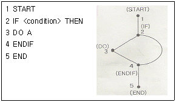
- 1
- 2
- 3
- 4
(정답률: 50%)
69. 객체지향기법에서 inheritance에 대한 설명에 해당 하는 것은?
- 상위 클래스의 매소드와 속성을 하위 클래스가 물려받는 것을 말한다.
- 데이터와 데이터를 조작하는 연산을 하나로 묶는 것을 말한다.
- 객체 클래스로부터 만들어진 하나의 인스턴스이다.
- 변수가 취할 수 있는 여러 가지 특성 중의 하나를 결정 받는 것을 말한다.
(정답률: 61%)
70. 다음 보기에서 설명하는 특징에 해당하는 것은?
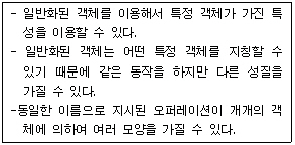
- 추상화
- 캡슐화
- 다형성
- 상속성
(정답률: 65%)
71. 유지보수의 종류 중 소프트웨어 테스팅 동안 밝혀지지 않는 모든 잠재적인 오류를 찾아 수정하는 활동에 해당하는 것은?
- Corrective Maintenance
- Adaptive Maintenance
- Perfective Maintenance
- Preventive Maintenance
(정답률: 51%)
72. 자료흐름도의 구성요소가 아닌 것은?
- 소단위명세서
- 단말
- 프로세스
- 자료저장소
(정답률: 58%)
73. 소프트웨어 공학의 기본 원칙이라고 볼 수 없는 것은?
- 현대적인 프로그래밍 기술 적용
- 지속적인 검증 시행
- 결과에 대한 명확한 기록 유지
- 충분한 인력 투입
(정답률: 62%)
74. 자료사전에서 자료 반복의 의미를 갖는 기호는?
- { }
- +
- ( )
- =
(정답률: 72%)
75. 정형 기술 검토시 지침 사항으로 옳지 않은 것은?
- 참가자의 수를 제한한다.
- 의제를 제한하지 않고 폭 넓게 진행한다.
- 문제 영역을 확실히 표현한다.
- 제품의 검토에만 집중한다.
(정답률: 63%)
76. 프로젝트 일정 관리시 사용하는 간트(Gantt) 차트에 대한 설명으로 옳지 않은 것은?
- 막대로 표시하며, 수평 막대의 길이는 각 태스크의 기간을 나타낸다.
- 이정표, 기간, 작업, 프로젝트 일정을 나타낸다.
- 시간선(Time-line) 차트라고도 한다.
- 작업들 간의 상호 관련성, 결정경로를 표시한다.
(정답률: 60%)
77. 소프트웨어 공학에 대한 적절한 설명이 아닌 것은?
- 소프트웨어의 개발, 운영, 유지보수, 그리고 폐기에 대한 체계적인 접근이다.
- 소프트웨어 제품을 체계적으로 생산하고 유지보수와 관련된 기술과 경영에 관한 학문이다.
- 과학적인 지식을 컴퓨터 프로그램 설계와 제작에 실제 응용하는 것이며, 이를 개발하고 운영하고 유지보수하는데 필요한 문서화 작성 과정이다.
- 소프트웨어의 위기를 이미 해결한 학문으로, 소프트웨어의 개발만을 위한 체계적인 접근이다.
(정답률: 71%)
78. 어떤 소프트웨어 개발을 위해 10명의 개발자가 20개월 동안 참여되었다. 그 중 7명은 20개월 동안 계속 참여했고 3명은 5개월 동안만 참여했다. 이 소프트웨어 개발에 필요한 MM(Man-Month)은 얼마인가?
- 5
- 20
- 79
- 155
(정답률: 63%)
79. 소프트웨어 품질 목표 중 최소한의 컴퓨터 시간과 기억장소를 소요하여 요구된 기능을 수행하는 시스템 능력을 의미하는 것은?
- Usability
- Reliability
- Integrity
- Efficiency
(정답률: 52%)
80. 소프트웨어 생명주기 모형에 대한 설명으로 옳은 것은?
- 폭포수 모형을 점진적 모형이라고도 한다.
- 나선형 모형은 반복적으로 개발이 진행되므로 소프트웨어의 강인성을 높일 수 있다.
- 프로토타입 모형은 개발 단계에서 요구사항 변경이 불가능하므로 유지보수 비용이 많이 발생한다.
- 폭포수 모형은 최종 결과물이 만들어지기 전에 의뢰자가 최종결과물의 모형을 볼 수 있다.
(정답률: 49%)
5과목: 데이터 통신
81. TCP/IP에서 네트워크 계층과 관련이 없는 프로토콜은?
- IGMP
- SNMP
- ICMP
- IP
(정답률: 54%)
82. HDLC에서 사용되는 프레임 유형이 아닌 것은?
- Information Frame
- SupervisoryFrame
- UnnumberedFrame
- ControlFrame
(정답률: 55%)
83. 데이터링크 프로토콜인 HDLC에서 프레임의 동기를 제공하기 위해 사용되는 구성 요소는?
- 플래그(Flag)
- 제어부(Control)
- 정보부(Information)
- 프레임 검사 시퀀스(Frame Check sequence)
(정답률: 61%)
84. 아날로그 데이터를 디지털 신호로 변환하는 과정에 포함되지 않는 것은?
- encryption
- sampling
- quantization
- encoding
(정답률: 45%)
85. X.25는 ITU-T 표준으로 호스트 시스템과 패킷 교환망간 인터페이스를 규정하고 있다. 이 기능에 포함되지 않는 것은?
- 링크 계층(link level)
- 패킷 계층(packet level)
- 물리 계층 (physical level)
- 전송 계층 (transport level)
(정답률: 50%)
86. 다음이 설명하고 있는 것은?
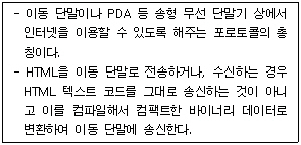
- HTTP
- FTP
- SMPT
- WAP
(정답률: 63%)
87. 디지털 데이터를 아날로그 신호로 변환하는 방법이 아닌 것은?
- ASK
- FSK
- PSK
- PCM
(정답률: 69%)
88. 전송 데이터가 있는 동안에만 시간 슬롯을 할당하는 다중화 방식은?
- 통계적시분할 다중화
- 광파장분할 다중화
- 동기식시분할 다중화
- 주파수분할 다중화
(정답률: 53%)
89. LAN을 망의 형상(Topology)으로 구분할 때, 각 노드에서 발생한 송신 요구가 충돌을 일으킬 경우에 재 전송하거나 충돌을 피하기 위한 매체 액세스 방식으로 주로 CSMA/CD방식을 사용하는 것은?
- Star 형
- Bus 형
- Ring 형
- Loop 형
(정답률: 48%)
90. 다음이 설명하고 있는 프로토콜은?
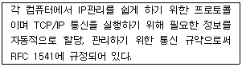
- LDP
- DHCP
- ARP
- RTCP
(정답률: 52%)
91. 다음 데이터 전송 제어 절차를 순서대로 옳게 나열한 것은?
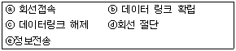
- ⓐ→ⓑ→ⓒ→ⓓ→ⓔ
- ⓐ→ⓑ→ⓔ→ⓓ→ⓒ
- ⓐ→ⓑ→ⓔ→ⓒ→ⓓ
- ⓐ→ⓔ→ⓑ→ⓓ→ⓒ
(정답률: 71%)
92. 웹 브라우저에서 지원하지 않는 서비스는?
- E-mail 서비스
- FTP 서비스
- HTTP 서비스
- SNMP 서비스
(정답률: 59%)
93. 데이터 전송 시스템에 있어서 통신 방식의 종류가 아닌 것은?
- 단방향 통신 방식
- 반이중 통신방식
- 회선 다중방식
- 전이중 통신방식
(정답률: 65%)
94. 이동통신 가입자가 셀 경계를 지나면서 신호의 세기가 작아지거나 간섭이 발생하여 통신 품질이 떨어져 현재 사용중인 채널을 끊고 다른 채널로 전체하는 것을 의미하는 것은?
- Mobile Control
- Location registering
- Hand off
- Multi-Path fading
(정답률: 62%)
95. 국(station) 간의 관계가 주/종 관계일 때 종국이 데이터를 보내려 한다면 먼저 주국으로부터 받아야 하는 신호는?
- ACK
- ENG
- Poll
- SEL
(정답률: 47%)
96. 다음이 설명하고 있는 데이터 링크 제어 프로토콜은?
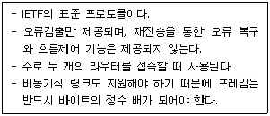
- HDLC
- PPP
- LAPB
- LLC
(정답률: 47%)
97. 데이터 통신에서 발생할 수 있는 오류(error)를 검출하는 기법이 아닌 것은?
- Parity Check
- Run Length Check
- Block Sum Check
- Cyclic Redundancy Check
(정답률: 59%)
98. 다음 인터넷 도메인의 설명 중 옳지 않은 것은?
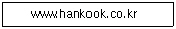
- www : 호스트 컴퓨터 이름
- hankook : 소속기관
- co : 소속기관의 서버이름
- kr : 소속 국가
(정답률: 48%)
99. OSI 참조 모델 중 다음이 설명하고 있는 기능을 수행하는 계층은?
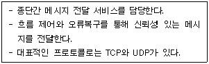
- 세션계층
- 트랜스포트 계층
- 네트워크 계층
- 데이터링크 계층
(정답률: 52%)
100. 다음 중 IPv6에 대한 설명으로 옳지 않은 것은?
- IPv6 주소는 128비트 길이이다.
- 암호화와 인증 옵션 기능을 제공한다.
- Qos는 일부 지원하지만, 품질 보장이 곤란하다.
- 프로토콜의 확장을 허용하도록 설계되었다.
(정답률: 63%)